| 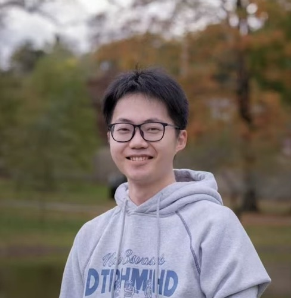 |
Yichen Wu / 吴一尘 （Pronounced: Ee-chen Woo） |
Biography
I am currently a Postdoctoral Research Fellow at MGB/Harvard Medical School, working with Prof. Xiang Li and Prof. Quanzheng Li . Recently, I have focused on Continual Learning/Knowledge Editing, MLLM, Model Quantization and Medical Agents.
I received my Ph.D. in Computer Science from the City University of Hong Kong under the supervision of Prof. Ying Wei and Prof. Kede Ma. Before that, I received my M.Sc degree under the supervision of Prof. Deyu Meng from the School of Mathematics and Statistics, Xi'an Jiaotong University. Additionally, I hold dual B.S. degrees from Beijing Jiaotong University, where I majored in Mathematics and minored in Economics and Management. Also, I was a visiting scholar in the Visual Computing Group, Harvard, supervised by Prof. Hanspeter Pfister (IEEE Fellow, ACM Fellow) and working closely with Dr. Wanhua Li.
If you are interested in my research or would like to work with me, feel free to contact me.
Research Interest
My research interests include continual learning, transfer learning, and meta-learning. Currently, I am focusing on designing algorithms to enhance the efficiency of LLMs in handling continual learning and exploring methods to utilize transformers within LLMs efficiently. Additionally, I am dedicated to investigating the following research topics:- Forgetting/hallucination problems
- Optimize algorithms to accelerate LLM
- Continual Learning in Medical Applications
- Weakly Supervised Learning (including noisy/imbalanced settings)
Research Experiences

|
Harvard VCG Lab, MA, U.S. Visiting Scholar, Sep. 2024 ~ Now Supervised by Prof. Hanspeter Pfister (IEEE Fellow, ACM Fellow) and working closely with Dr. Wanhua Li. |
| 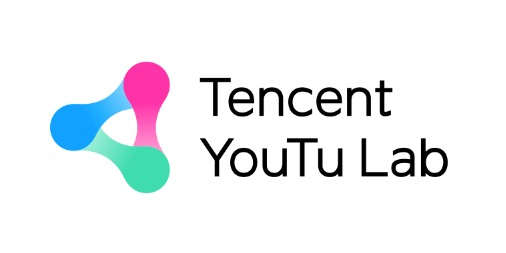 |
Youtu Lab (Original Jarvis Research Center)@Tencent, Shenzhen, China Research Intern, Sep. 2023 ~ April. 2024 Supervised by Prof. Yefeng Zheng (IEEE Fellow, AIMBE Fellow) and Dr. Hong Wang |
| 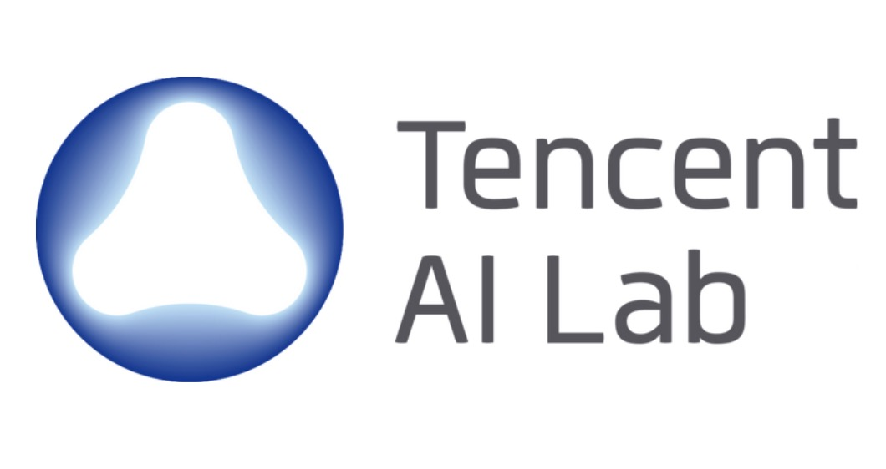 |
AI Lab (Machine Learning Center)@Tencent, Shenzhen, China Research Intern (Tencent Rhino Bird Elite Talent Program), Feb. 2021 ~ Aug. 2023 Supervised by Dr. Long-Kai Huang and Dr. Peilin Zhao |
News
- [09/2025] One paper has been accepted for NeurIPS 2025! Congrats to Xueqing！
- [08/2025] I have joined HMS/MGB as a Postdoctoral Research Fellow!
- [07/2025] One paper about knowledge editing has been accepted for COLM 2025! Congrats to Zhiyi and Binjie!
- [06/2025] Two papers have been accepted for ICCV 2025! Congrats to Minghan and Yinan!
- [04/2025] One paper is accepted for an Highlight at CVPR 2025! Congrats to Haowen!
- [02/2025] Our SD-LoRA is accepted for an oral presentation at ICLR 2025!
- [01/2025] Our paper “SD-LoRA: Scalable Low-Rank Adaptation for Class Incremental Learning” has been accepted by ICLR 2025!
- [01/2025] Our paper “Adaptive Weighting based Metal Artifact Reduction in CT Images” has been accepted by TMI.
- [12/2024] Attending NeurIPS 2024 in Vancouver—looking forward to connecting!
- [09/2024] One paper has been accepted by IJCV.
- [09/2024] Our Dual-quant about the LLM Quantization is accepted for an oral presentation at NeurIPS 2024!
- [09/2024] Thrilled to have spent a year as a visiting scholar at Harvard!
- [06/2024] Happy to receive the ICML Travel Award (2024)!
- [05/2024] Honored to receive the ICLR 2024 Outstanding Honorable Mention Award !
- [05/2024] Two papers related to continual learning are accepted by ICML 2024.
- [04/2024] Happy to be selected as a DAAD AInet Fellow (2024)!
- [01/2024] Our VR-MCL for Meta-Continual Learning is accepted in ICLR 2024 (oral, 1.2% of submissions)!
- [01/2024] I have been invited to serve as a reviewer for CVPR2024.
- [09/2023] I have been invited to serve as a reviewer for ICLR2024.
- [06/2023] I have been invited to be a reviewer for TNNLS.
- [07/2023] Our CBA for alleviating the recency bias in continual learning is accepted in ICCV 2023.
- [01/2023] Our L2AC for imbalanced semi-supervised learning is accepted in ICLR 2023.
- [10/2022] I am honored with the NeurIPS 2022 travel award!
- [09/2022] Our ATU for task augmentation in meta-learning is accepted in NeurIPS 2022 (spotlight).
- [09/2021] Begin my journey at the City University of Hong Kong under the supervision of Prof. Ying Wei.
- [06/2021] I graduate from XJTU, with heartfelt thanks to my supervisor, Deyu Meng.
- [05/2021] One paper is accepted in MICCAI 2021.
- [03/2021] Our survey paper on single-image and video deraining is accepted in Science China Information Sciences.
- [12/2020] Our MSLC for learning with noisy labels is accepted in AAAI 2021.
- [12/2020] One paper is accepted in Knowledge-Based System.
- [09/2018] Begin my journey in IID Lab, Xi'an Jiaotong University under the supervision of Prof. Deyu Meng.
Selected Publications [Full List] (^Co-first author; *Corresponding author)
| 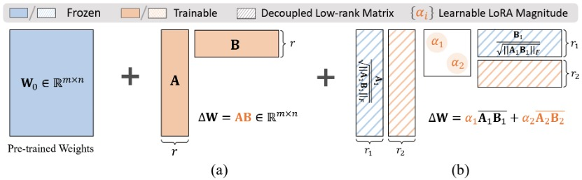 |
SD-LoRA: Scalable Decoupled Low-Rank Adaptation for Class Incremental Learning. |
| 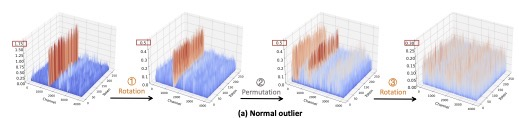 |
DuQuant: Distributing Outliers via Dual Transformation Makes Stronger Quantized LLMs. |
 |
Mitigating Catastrophic Forgetting in Online Continual Learning by Modeling Previous Task Interrelations via Pareto Optimization |
| 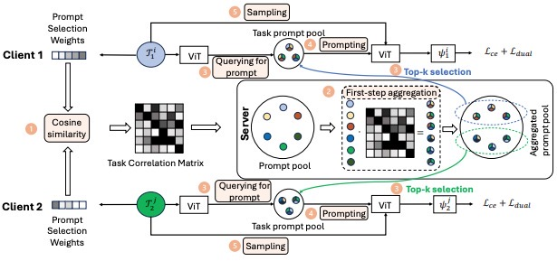 |
Federated Continual Learning via Prompt-based Dual Knowledge Transfer |
| 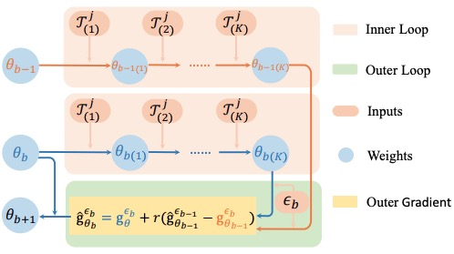 |
Meta Continual Learning Revisited: Implicitly Enhancing Online Hessian Approximation via Variance Reduction (Outstanding Paper Award Honorable Mention, 0.23% acceptance rate) |
| 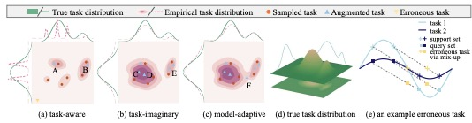 |
Adversarial Task Up-sampling for Meta-learning |
| 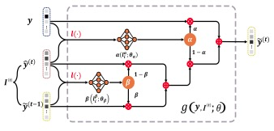 |
Learning to Purify Noisy Labels via Meta Soft Label Corrector |
| 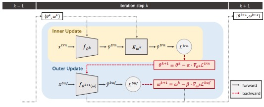 |
CBA: Improving Online Continual Learning via Continual Bias Adaptor |
| 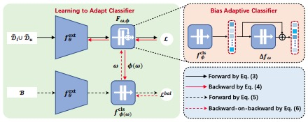 |
Imbalanced Semi-supervised Learning with Bias Adaptive Classifier |
| 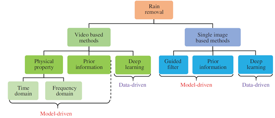 |
Survey on Rain Removal From Videos or A Single Image |
| 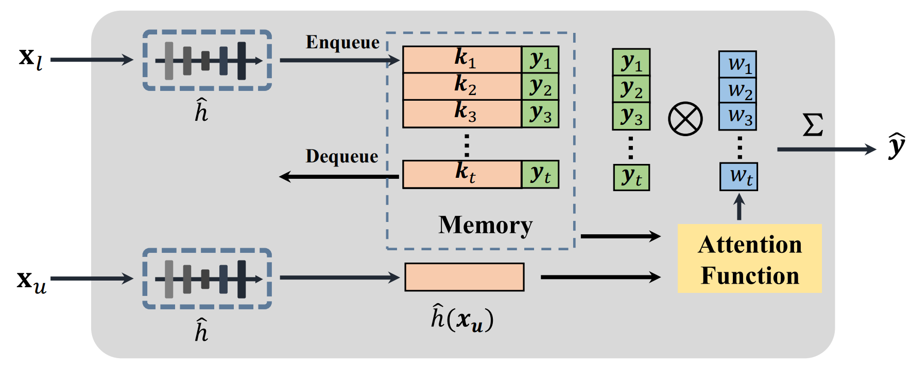 |
Neighbor Matching for Semi-supervised Learning |